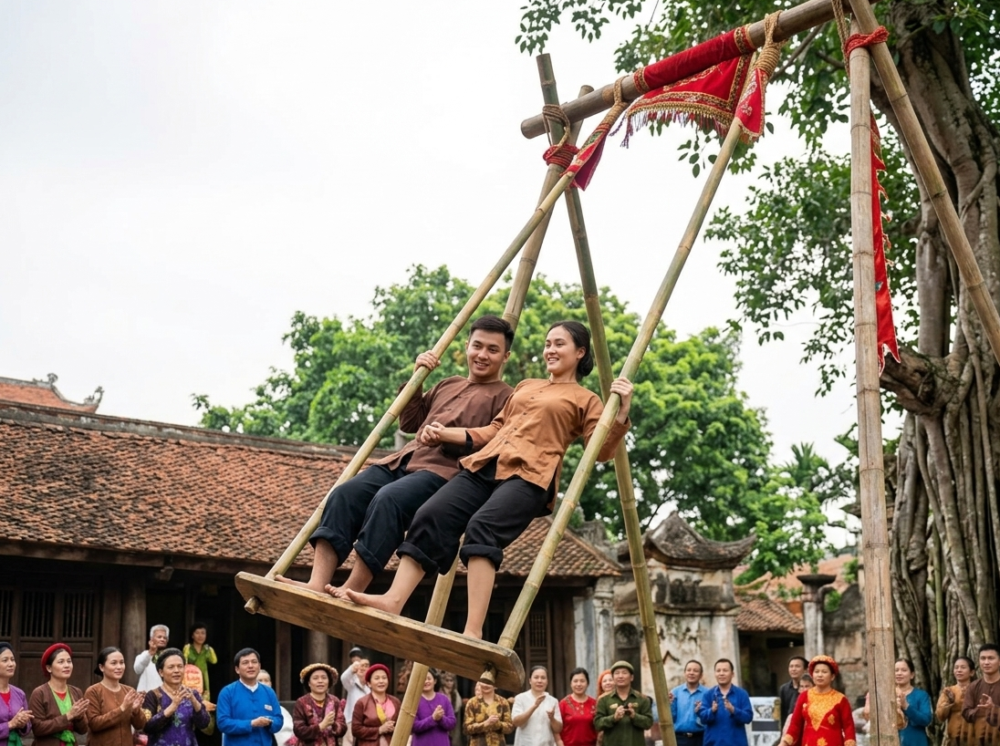
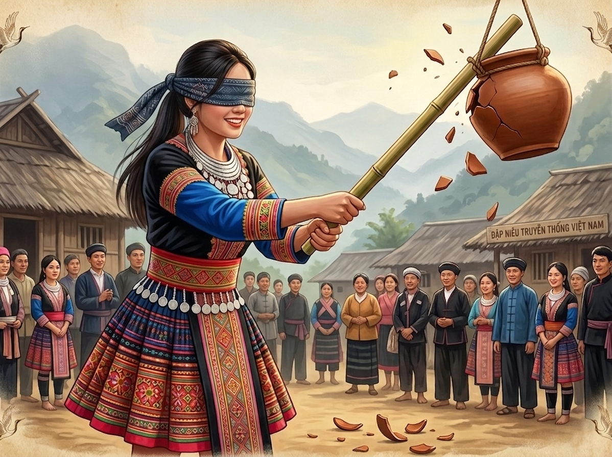
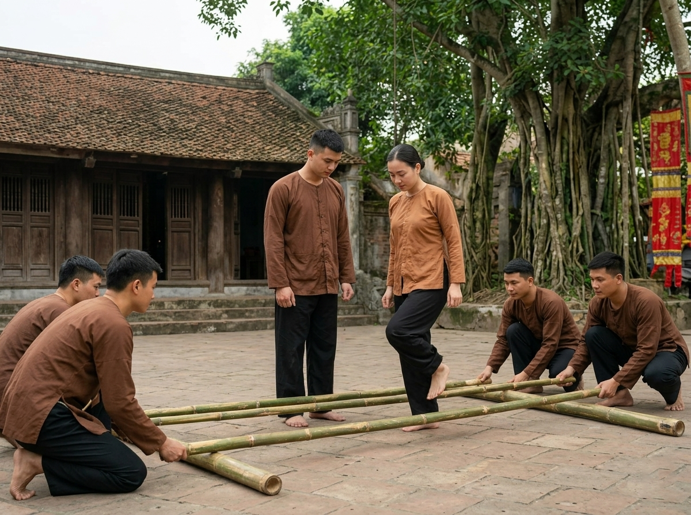
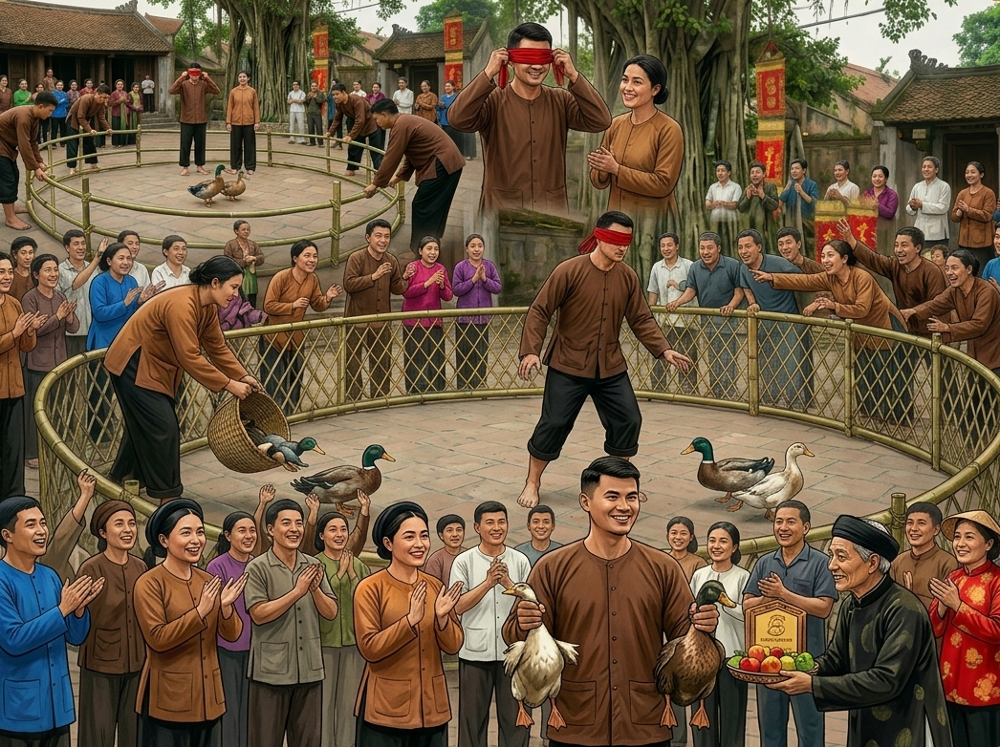
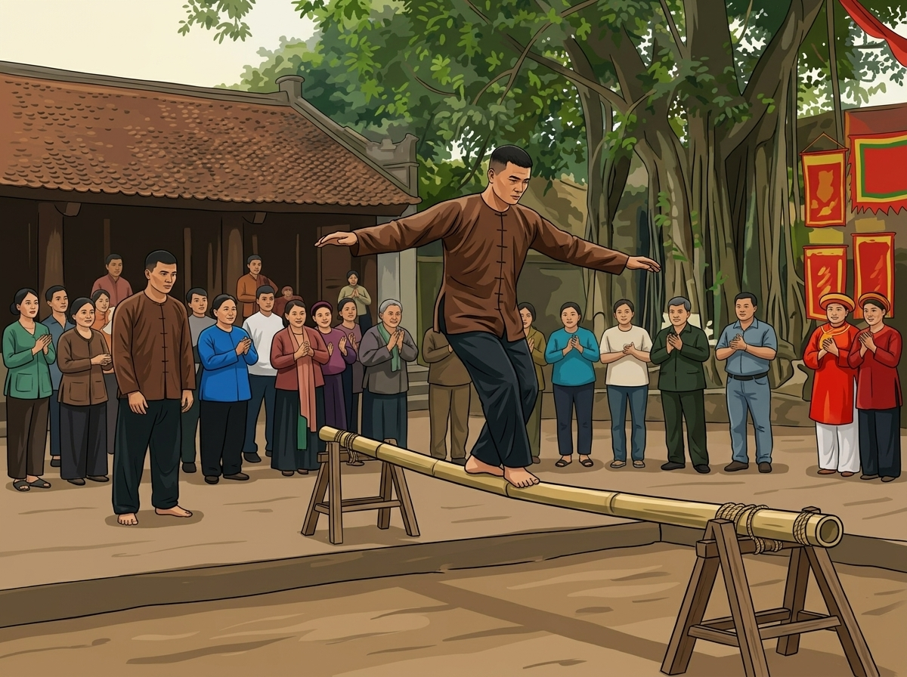
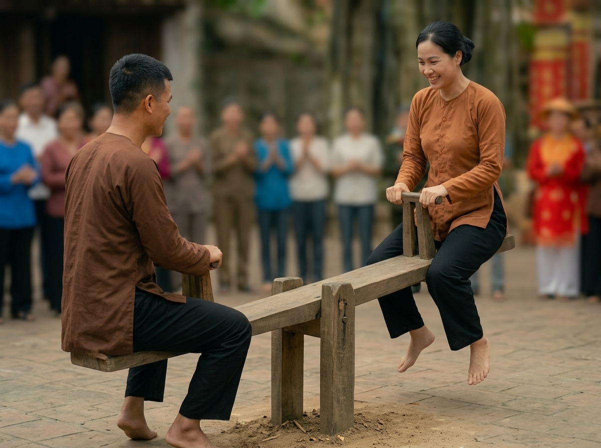
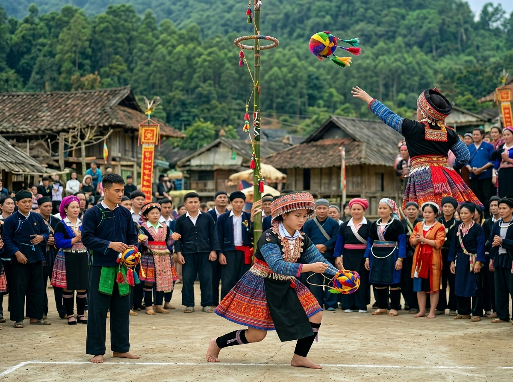

Trò chơi dân gian không chỉ là niềm vui, mà còn là ký ức và những khoảnh khắc ý nghĩa. Bạn có nhớ lần gần nhất bạn cười thật lớn khi chơi một trò chơi? Cùng ai? Ở đâu? Hãy để chúng tôi giúp bạn sống lại những cảm xúc ấy.
Hành trình khám phá những trò chơi dân gian đặc sắc
Từ những bãi đất quê làng Việt Nam đến các lễ hội truyền thống trên khắp thế giới, trò chơi dân gian luôn phản ánh nét đẹp văn hóa, sự sáng tạo và tinh thần gắn kết cộng đồng của con người qua nhiều thế hệ.
Video này là tuyển chọn những khoảnh khắc thú vị nhất của các trò chơi dân gian – từ cổ xưa đến hiện đại, từ Việt Nam đến nhiều nền văn hóa khác nhau. Mỗi trò chơi không chỉ mang tính giải trí, mà còn ẩn chứa những bài học về sự khéo léo, tinh thần đồng đội và bản sắc dân tộc.
Những trò chơi làm nên tuổi thơ
Chọn lọc 7 trò chơi dân gian tiêu biểu, gắn liền với hội làng, Tết cổ truyền và những buổi chiều quê mộc mạc.

Đánh đu
Trò chơi gắn với nhiều lễ hội của người Việt, phổ biến ở nông thôn Bắc Bộ; rèn dẻo dai, thăng bằng và tinh thần đoàn kết trong hoạt động tập thể.
Xem chi tiết
Bịt mắt đập niêu
Giải trí cao, tiếng cười rộn ràng; rèn khả năng định hướng không gian, phản xạ và tập trung — rất phù hợp hoạt động ngoại khóa sinh viên.
Xem chi tiết
Nhảy sạp
Mang đậm nét văn hóa truyền thống, không khí sôi động; rèn nhanh nhẹn, phối hợp nhịp nhàng và tinh thần đồng đội trong sinh hoạt tập thể.
Xem chi tiết
Bắt vịt
Vui nhộn, hào hứng; rèn nhanh nhẹn, quan sát và phản xạ linh hoạt, đồng thời tăng tinh thần đoàn kết trong hội trại và ngoại khóa.
Xem chi tiết
Đi cầu kiều
Vận động nhẹ, rèn khéo léo, thăng bằng và tập trung; phù hợp môi trường sinh viên và gắn kết tập thể.
Xem chi tiết
Bập bênh
Vận động nhẹ; rèn giữ thăng bằng và phối hợp nhóm, tạo không khí vui vẻ và gắn kết trong ngày hội sinh viên.
Xem chi tiết
Ném còn
Mang đậm bản sắc vùng cao trong lễ hội; rèn khéo léo, chính xác và tinh thần tập thể — trải nghiệm văn hóa gắn kết sinh viên.
Xem chi tiếtKý ức và cảm nhận về trò chơi dân gian
Tiếng sạp, tiếng cười sân đình hay giây phút thả còn — mỗi người một kỷ niệm gắn với trò chơi làng quê.
"Hồi nhỏ đi hội làng, tôi thích nhất được xem nhảy sạp: nhịp tre gõ đều, mọi người nhún nhảy sao cho khớp — vừa hồi hộp vừa vui, như cả làng cùng một nhịp đập."
"Ở trường con tôi có ngày hội thể thao dân gian; các em được chơi bắt vịt, kéo co… Tiếng reo hò không ngớt — trò chơi đơn giản mà gắn kết cả lớp."
"Tết về quê ngoại, anh em cháu chắt kéo nhau ra sân đình xem đánh đu, ném còn. Không khí náo nức — giữ được những trò đó là giữ được phần hồn của làng."